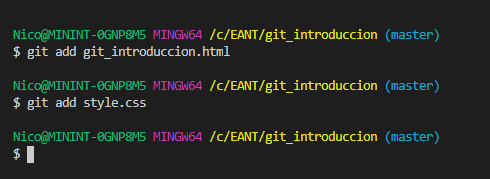

Introducción a GIT
Un programa hecho con amor y mucho código :D
- git init
- git config INDICAMOS USUARIO user.name ponemos nombre de usuario de github o el que usemos
- git config user.email y nuestro email
NOTA: Si queremos usar mismo usario para todos los proyectos: usamos git config global user.name ...
- GIT STATUS: chequeamos qué archivos se crearon o modificaron
- GIT ADD archivo.extensión: adicionamos al repositorio el archivo

- GIT COMMIT -m 'descripción breve de lo que hicimos': Agregamos al repositorio todo lo que sumamos con el add
- Creamos repositorio en Github
- Hacemos: git remote add origin y url del repositorio dado por Github https://github.com/nicod-c/intro_git_eant.git
- git push -u origin master'PUSHEAMOS' al repositorio de Github todo lo que hiciemos
git pull nos traemos la última versión del proyecto que haya en Github
git log vemos el historial de modificaciones Github, para salir de esto hacemos Q